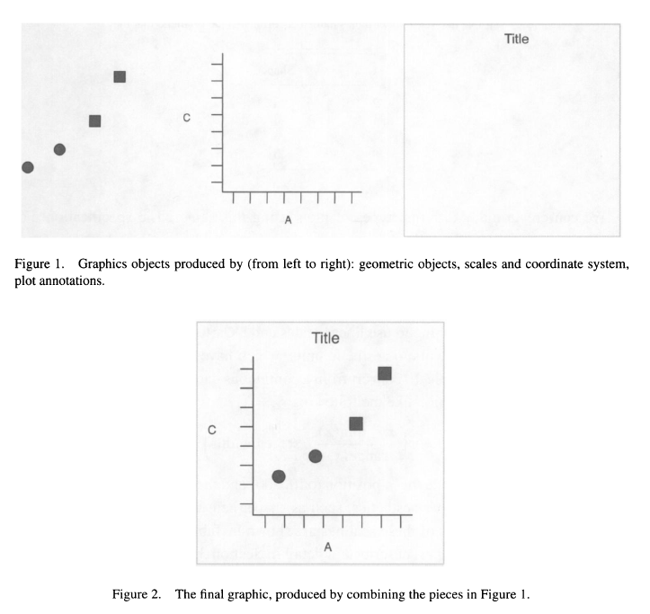

library(tidyverse)
# cylinder classes plotted together:
mtcars
ggplot(data=mtcars) +
geom_point(mapping=aes(x=mpg, y=wt))
ggplot(mtcars) +
geom_point(aes(mpg, wt)) Session 3
Data Visualization and Narration
Session 3: Data visualization and narration
Agenda
- ggplot2 and the grammar of graphics
- Geoms (different kinds of plots) and aesthetic mappings
- Applying more layers: additional geoms, scales, themes, labels
- Using RStudio for writing papers, presentations, etc. (RNotebooks and Quarto Documents)
Most of what we are doing today is in the {ggplot2} and {…} packages. These PDF cheat sheets are a handy reference: ggplot2, …
ggplot2 and the grammar of graphics
ggplot2 is conceptually based in a “layered grammar of graphics” as described in Wickham 2010:

Wickham, Hadley. 2010. “A Layered Grammar of Graphics.” Journal of Computational and Graphical Statistics 19 (1): 3–28. https://doi.org/10.1198/jcgs.2009.07098.
The “code template” for a plot
Minimal:
ggplot(data = <DATA>) + <GEOM_FUNCTION>(mapping = aes(<MAPPINGS>))
<DATA> is a dataframe or tibble.
Mappings take the format aesthetic = variable, e.g., x = time_elapsed (the continuous variable time_elapsed is on the x axis) or color = species (the categorical variable species is indicated using different colors).
More:
{ggplot(data = <DATA>) +} <GEOM_FUNCTION>(mapping = aes(<MAPPINGS>)) +
<GEOM_FUNCTION>(mapping = aes(<MAPPINGS>), stat=<STAT>, position=<POSITION>) + <COORDINATE_FUNCTION> + <FACET_FUNCTION> + <SCALE_FUNCTION> + <THEME_FUNCTION>
Exploratory data analysis
library(tidyverse)
library(medicaldata)
cvdrisk <- read_csv("data/genoData.csv")Single variable
Histograms (continuous)
# frequency of systolic blood pressure observations:
ggplot(data = cvdrisk) + geom_histogram(mapping = aes(x = sbp))
# bin widths:
ggplot(data = cvdrisk) + geom_histogram(mapping = aes(x = sbp), binwidth = 5)
ggplot(cvdrisk) +
geom_histogram(aes(numAge), binwidth=1)Bar charts (discrete)
# a count of age categories
ggplot(cvdrisk) +
geom_bar(mapping = aes(x=age))
ggplot(cvdrisk) +
geom_bar(aes(race))
# bar charts can also be organized vertically; use a y aes mapping:
ggplot(cvdrisk) +
geom_bar(aes(y=race))
ggplot(cvdrisk) + geom_bar(aes(y=gender))Piping into ggplot
# blood pressure distribution among patients aged 25-30
cvdrisk %>%
filter(between(numAge, 25, 30)) %>%
ggplot() +
geom_histogram(aes(sbp))
# note: after ggplot(), you must switch from %>% to +Exercise 1
- In
cvdrisk, what do you guess the distribution of smokers vs. nonsmokers might be? How can you visualize this with a bar chart?
cvdrisk %>%
ggplot() + geom_bar(mapping=aes(x=smoking))- Remember the
smartpilldataset from {medicaldata}? How would you plot a histogram of patient age fromsmartpill? (Quick tip: you can check a dataframe’s variable names with thenames()function:names(smartpill)) How does this compare tocvdrisk’s age distribution?
smartpill %>% ggplot(aes(Age), binwidth=2) +
geom_histogram()- In
cvdrisk, do you think the age distribution will be different among smokers, as compared to the overall population, and if so, how? How can you examine this distribution? (Hint: you will need the “piping into ggplot” section above)
cvdrisk %>%
filter(smoking=="Y") %>%
ggplot() +
geom_histogram(aes(numAge), binwidth=1)Two variables
Two continuous variables: scatter plots (geom_point()), smooth lines (geom_smooth())
smartpill %>%
ggplot(mapping=aes(x=S.Mean.pH, y=Colon.Contractions)) +
geom_point() + geom_smooth()
smartpill %>%
ggplot(aes(x=S.Mean.pH, y=S.Mean.Peak.Amplitude)) +
geom_point() +
geom_smooth()One discrete, one continuous: column charts, box/violin plots
cvdrisk %>% ggplot() +
geom_bar(aes(x=t2d, y=bmi), stat="summary", fun="mean")
cvdrisk %>% ggplot() +
geom_boxplot(aes(x=t2d, y=bmi))
cvdrisk %>% ggplot() +
geom_violin(aes(x=t2d, y=bmi))
cvdrisk %>% ggplot() +
geom_density(aes(x=bmi, color=t2d))Using a third aesthetic and variable
Common aesthetic mappings: x, y, color, fill, size, alpha, ...
cvdrisk %>% ggplot() +
geom_bar(aes(x=t2d, y=bmi, fill=smoking), stat="summary", fun="mean", position="dodge")
as.factor(smartpill$Gender)
smartpill %>%
ggplot() +
geom_point(aes(x=Age, y=SB.Mean.pH, color=as.factor(Gender)))Exercise 2
- Using the
smartpilldataset, make a scatter plot of Height and Weight.
- Make a violin or box plot of
tcholdistributions for patients who havet2dversus those who don’t.
Other geoms
ggplot2 offers several more possibilities for geoms:
- Line charts:
geom_line()(can be combined withgeom_point()e.g. for longitudinal “spaghetti plots”) - Alternatives to histogram:
geom_area(), geom_density(), geom_freqpoly() - Continuous bivariate:
geom_hex(), geom_bin2d(), geom_density2d() - Discrete x discrete:
geom_count() - Continuous function:
geom_line(), geom_area() - Error:
geom_errorbar(), geom_linerange() geom_map()draws geographic maps
Applying more layers
Additional layers modify the default behavior of geoms. They always get added to your plot with + and are drawn in the order you write them. Here are examples of what you can do with example:
- scales (e.g., continuous, discrete, color), e.g., to supply your own color scheme, manually set breaks, etc.; they all start with
scale_ - zoom in/out using
coord_cartesian()orxlim() and ylim() - create a pie chart, out of a stacked bar chart, using
coord_polar() - set labels with
labs(title="", subtitle="")andxlab() and ylab() - facet (sub-plot) your data with
facet_wrap() and facet_grid() - theme your plot using
theme(), or using complete themes, e.g.,theme_minimal()
Saving plots
The best way to save plots is using ggsave().
my_plot <- smartpill %>%
ggplot(aes(Height, Weight)) +
geom_point() +
geom_smooth()
ggsave("my_plot.png", my_plot) # as PNG
ggsave("my_plot.svg", my_plot) # as SVGUsing RStudio for narration
The Quarto notebooks we’ve been using can be output to different formats.
Documents
When you’re ready to save your notebook in a different format, go to the header of the document (indicated with ---) and set the format field to html, docx, or pdf, according to what you prefer. Then click the Render button (top center of editor toolbar). Code will run to compile your document, and then the file will be saved. Note that you cannot “run” any part of the rendered notebook.
Slides
You can also use Quarto notebooks to make slides. Each top-level heading in the notebook becomes a slide title, and whatever is beneath becomes the contents of the slide. More info here: https://quarto.org/docs/presentations/
Using RMarkdown
The process described above is largely the same, except “Render” is called “Knit.” More info is at https://rmarkdown.rstudio.com/.
Next steps
- Problem set 3
- Session 4: Modeling, ???